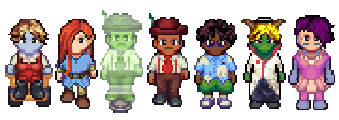
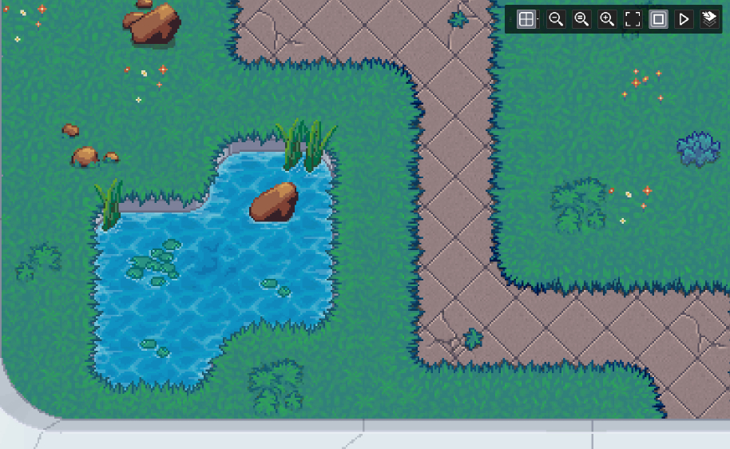
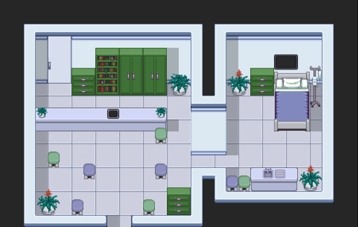

A Eulogy For Paraspora
Tags: posts, art, writing, my games, dev log,
So I've finally come to terms with the fact that I'm never going to finish my long ignored space farming sim Paraspora. Working on it was still a lot of fun, and I ended up with some assets that will hopefully be of use to other people.
You can see "all my uploaded assets at Opengameart.org". There's a bunch of 32x32 sprites and tiles, all released under a "share and share alike" Creative Commons license and drawing on the Liberated Pixel Cup assets.
I was writing the game in Gamemaker 2, following Friendly Cosmonaut's great farming sim tutorials
The premise of the game was that you were a terraforming cyborg sent by a space colonist corporation to create a space colony on an uninhabited planet.
At the start of the game everything is in black and green blocky sprites. There's a rockslide and you go unconscious. You wake up to a bunch of software updates and then everything is in full colour. It turns out you were unconscious for several years, during which time cyborgs gained more ßrights and the first wave of human colonists arrived. They have muddled along without you but there's a bunch you can do to help out. You choose you name, pronouns, and appearance. Over time you get to know everyone in the colony and help it survive and grow. Also there was going to be the option for romance and/or a platonic housemate. The basic gameplay followed Stardew Valley/Harvest Moon etc mechanics.
The corporation sees both you and this first wave of colonists as expendable, and they're all kind of misfits who chose a dangerous job for their own reasons. The corporation's plan is for this first wave to do the hard work of setting things up, and then a second wave of high class colonists would come and settle into the more stable and comfortable colony. I liked the idea of the colony instead seceding from the corporation and having Full Space Socialism with equal rights for robots etc but hadn't worked out exactly how to have that happen.
I was never sure if I'd fallen into some unfortunate implications with some of my character designs but no point worrying about that now.
Here's my original character designs for the love interests: 
Here's the sprites, as you can see they ended up changing a bit: 
The love interests: 1d: another cyborg. She was built to be a genderless mining bot with no rights, there was a huge scandal where it turned out the bots were genetically human and they all got given rights, at which point she created a new life for herself as a woman working with animals. Needs a wheelchair due to side effects of being decommissioned as a mining bot. I think Australian? Tsundere.
Leaf: Shy elf nerd who runs the plant supplies shop. Was in prison for a crime I hadn't figured out and was offered his freedom if he joined the first wave. American.
Ivo: The mayor. He is largely bedbound by illness so uses a little robot body with a projector to move around the town for him. Brazilian. In a polyamorous relationship with 1d's "brother": a genetically identical mining cyborg who unlike 1d identifies as a man and loves mining. Gregarious and energetic.ß
Eden: Climatologist and city planner eg the person you ask to make it rain. They grew up in a very badly managed Australian community and wanted to make sure this environment was set up to be sustainable long term from the start. Earent and nerdy.
Blair: The doctor. They got surgery to look like a dragon which makes it hard to find doctor jobs but they have no regrets. I think they were English? Flamboyantly fabulous.
May: Underwater logistics and Eden's assistant. She's from Malaysia, and what with global warming they have had to develop a lot of water technology. She got her body adapted to be able to breathe underwater. Her dress is a bathing suit and was inspired by shark eggs. Quiet until you get to know her.
Here's a couple more screenshots:

